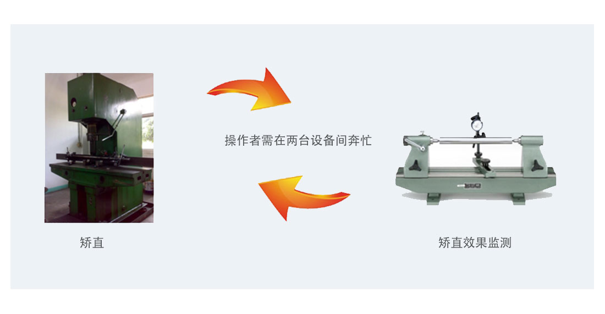
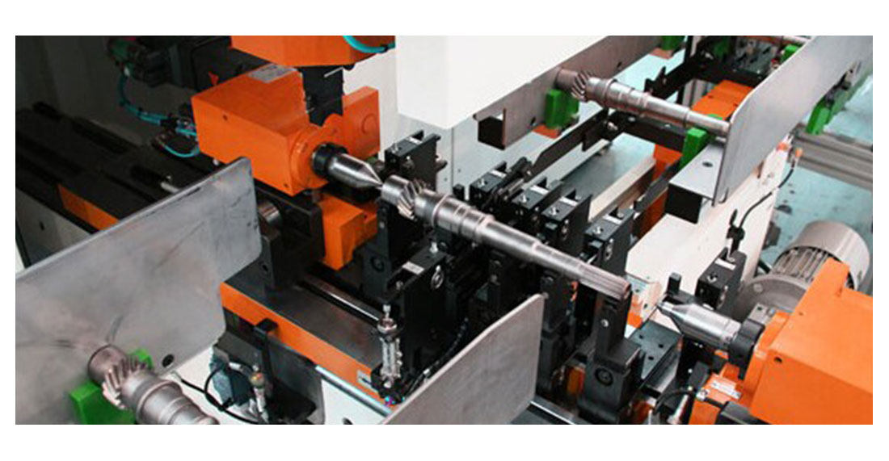
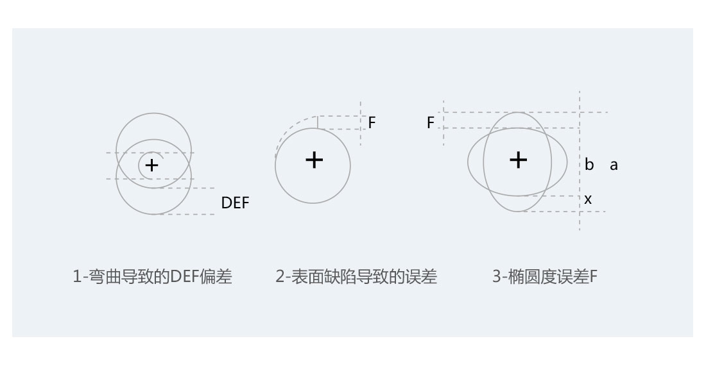
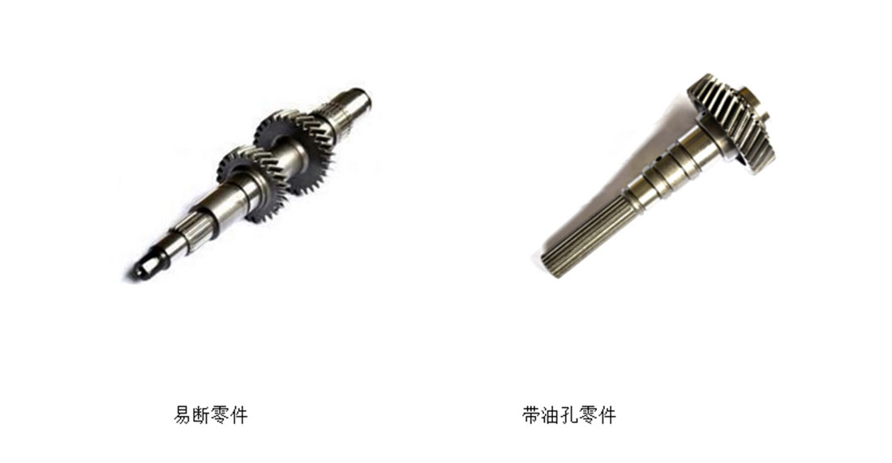
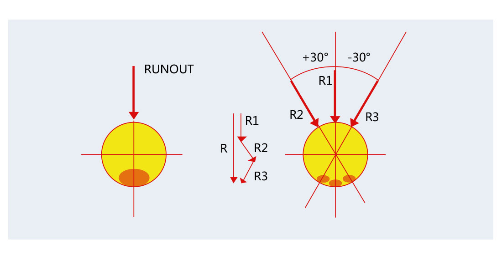
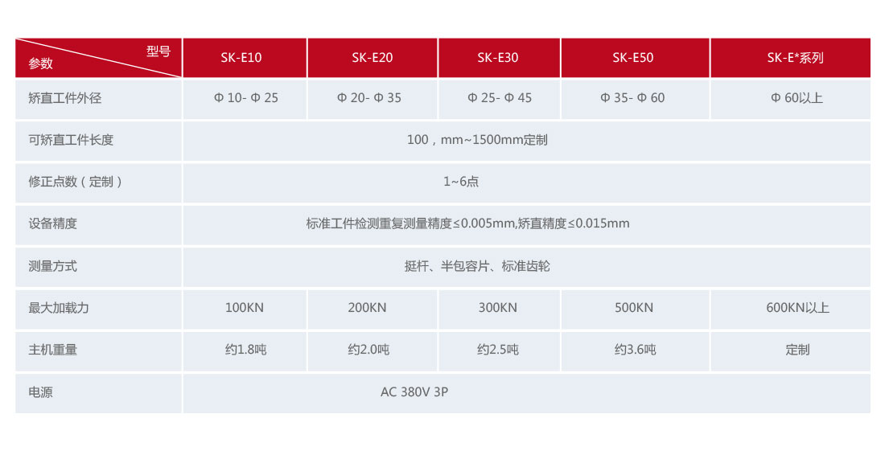

发布时间：2018-04-12 点击量：12474
标准型自动校直机产品参数：
校直压力：20～1000kN；
校直工件直径：φ5mm～φ100mm；
校直点数：1～6点；
校直效率：10～60秒/件；
可根据校直工件不同定制1000kN以上及异形工件校直设备、热校直设备。/不合格品等一系列自动生产流程。
汽车、工程机械、纺织、军工等行业的产品中广泛使用轴类、杆类零部件，这些零部件在热处理后会发生不同程度的变形，为了满足生产工艺对零件直线度或某些位置的跳动公差要求，校直工序是不可或缺的。/不合格品等一系列自动生产流程。
颠覆性的生产方式对比/不合格品等一系列自动生产流程。
传统的校直模式
操作者需在两台设备间奔忙
校直校直效果检测
缺点：
操作者劳动强度大；
产品质量受操作者经验、责任心影响；
生产效率不高；
一人只能操作一台设备。
全自动校直模式=150㎡
优势：
无人值守或者操作者只负责装卸工件；
高精度自动测量及校直位移控制系统，重复测量误差≤0.005mm，校直精度可达0.015mm；
24小时连续运行，工作效率成倍提升；
一人可操作多台设备。
自动校直机是集机械制造、液压控制、气动控制、伺服定位、计算机测控、数学建模于一体的高科技自动化产品。
长春上科机械有限公司生产的Straightener®自动校直机产品借鉴了德国人严谨的设计制造理念，注重品质，强调细节，始终把产品安全性和长时运行的稳定性放在第一位。
配置自动上下料线或者工业机器人的全自动校直机产品正逐渐成为越来越多的客户首选。
Straightener®自动校直机可与德国QASS裂纹检测系统无缝衔接，有效识别校直过程中产生裂纹的工件。
Straightener®自动校直机技术特点及优势：
①先进的ASMController控制系统
②超高校直精度：高可达0.015mm；
③国内快的校直节拍：10s～60s/件；
④数十项基于安全及人体工程学方面的设计；
⑤国内严格的校直机产品质量控制标准；
⑥远程服务与诊断系统；
⑦机械矢量分解技术MVD（Mechanicalvectordecomposition）
⑧无按键安全启动技术NB（Nobuttonsstart）；
⑨工件形状误差剔除技术（LSC）；
⑩自学习技术SS（Self-Study）；
⑪快速矫正算法SA（SuccessiveApproximation）；
⑫矫正曲线BCC（BestCorrectedCurve）；
⑬基于不同产品的校直算法灵活选择；
⑭矫正参数智能优化模块IOP（Intelligentoptimizationparameters）；
⑮“追求卓越，永不止步”的字精神。
Straightener®工件表面误差剔除技术（LSC）
ASMController控制系统软件集成了针对校直机产品设计的LSC算法，可以有效剔除轴类、管类零件本身的不圆度、毛刺等对测量结果的影响，真实反映零件偏心误差，排除局部缺陷对校直结果的误判，从而降低废品率。
Straightener®机械矢量分解技术（MVD）
针对个别脆性易断零件以及在校直轴颈上存在油孔的零件，通过有效手段避开应力集中点是降低废品率的有效途径。
易断零件带油孔零件
Straightener®自动校直机采用了机械矢量分解技术MVD解决该问题。通过数学建模，选择高强度并经过精密计算而制造的工装与ASMController控制系统软件配合，有效解决带油孔零件及脆性零件的校直难题。
Straightener®无工具换装技术
对于需校直工件品种较多的企业，生产人员希望拥有一台工装更换更加简便的自动校直设备，这也恰恰是上科盛荣追求的目标。
支承块快速可换工装
上下料单元快速调整
公司设计人员凭借多年与不同类型客户现场操作人员的经验交流，针对不同生产企业特点，总结了多种提高工装更换效率的实用方法，可以不依赖工具（螺丝刀、扳手等）实现校直工装及自动上下料生产线等快速换装操作。
Straightener®无按键安全启动技术NB
在校直机自动运行过程中，任何物体进入设备危险区域都可能导致伤害，为了避免该类现象发生，Straightener®自动校直机加入了数十项的安全互锁及防护装置。启动设备运转时，我们同样需要考虑操作者的安全问题，同时兼顾执行效率。
在国内，上一代自动校直机产品通常采用“双手按钮”启动的方式来规避安全风险，但在执行效率方面，每根工件校直过程中不可避免的增加了操作启动按钮的时间，至少1.5～2秒钟/次。
Straightener®的“无按键启动”功能可以控制校直系统在操作者将工件放置到位，手臂撤离危险区域后自动启动设备校直流程，从而在每一个工件校直过程中都减少一次双手按钮启动的附加动作，每天累计可减少约1000次弯腰及双手按下启动按钮的动作，从很大程度上降低操作者工作强度；以每次节约1.5秒钟的时间计算，每天可以减少工人25分钟的劳动时间或增加50～100根工件的校直产量。
Straightener®矫正曲线BCC
Straightener®运用校直行程自动计算功能与校直曲线BCC技术的结合，可以更加的完成校直流程。
Straightener®自动校直机产品型号与参数
标准机械式校直机参数表